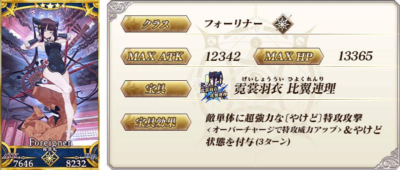
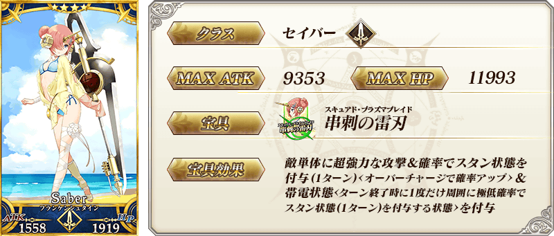
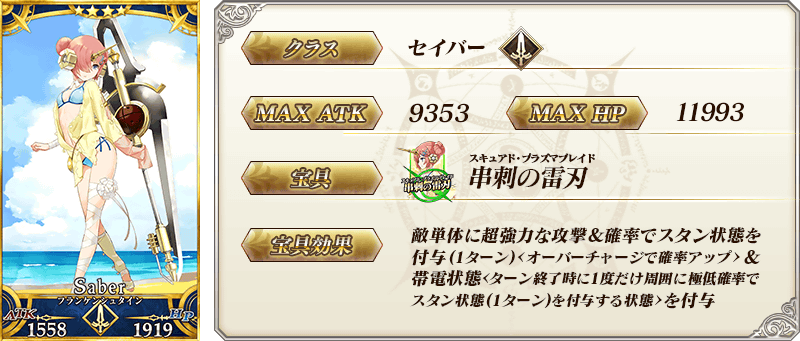
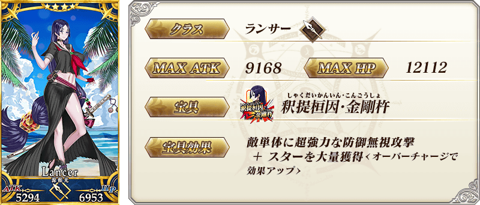
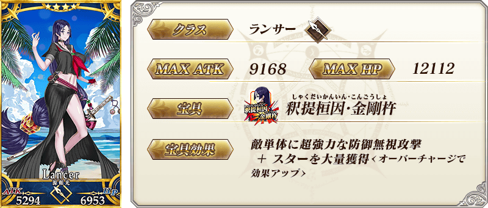
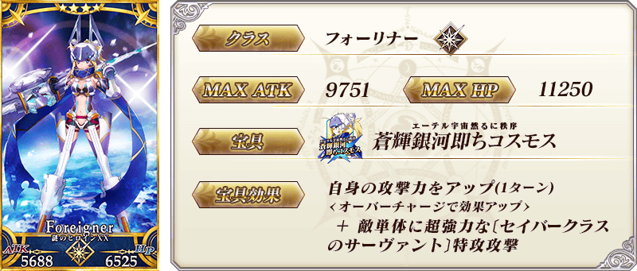
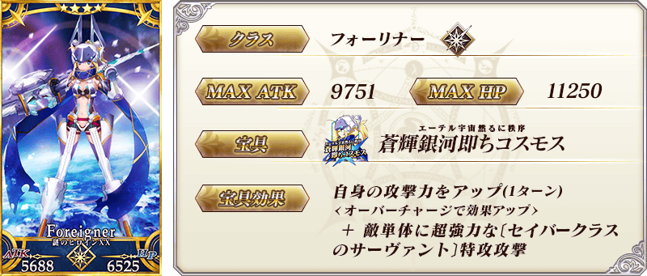
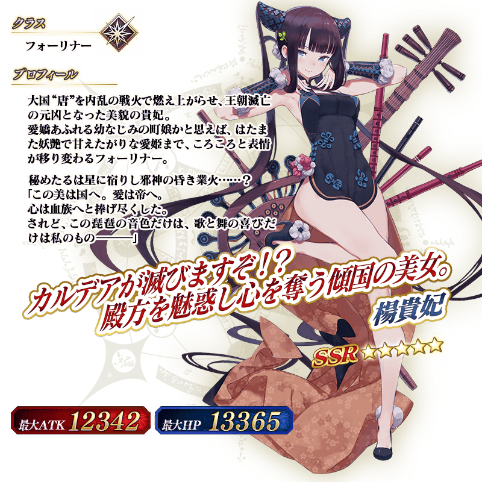
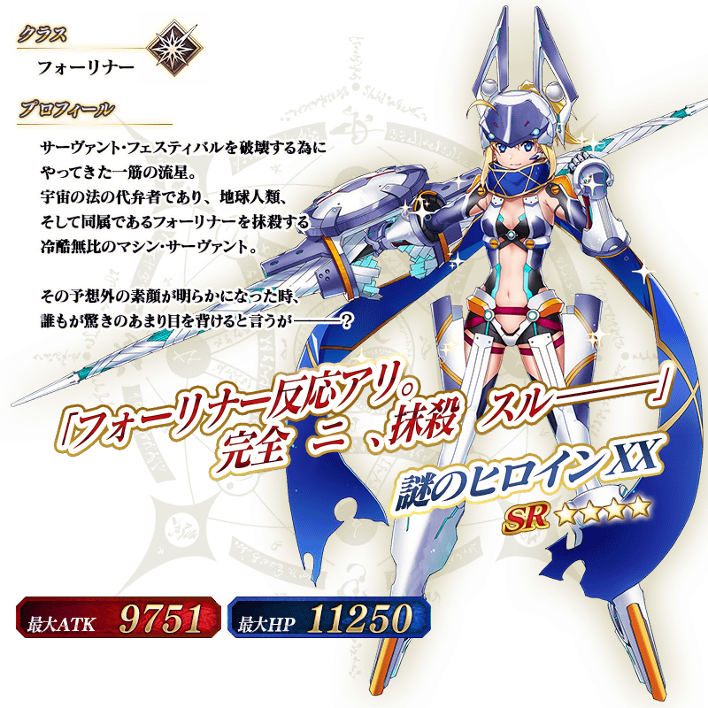
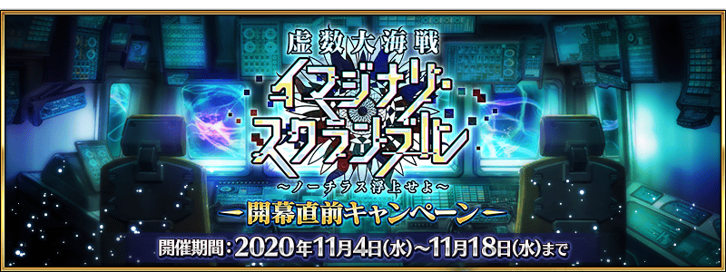

◆『「虛數大海戰」開幕前夕Pick Up召喚(每日交替)』期間◆
期間:2020年11月4日(三) 17:00～11月18日(三) 11:59
期間限定『「虛數大海戰」開幕前夕Pick Up召喚(每日交替)』舉辦！
※就算未滿足活動參加條件的狀態也能進行本召喚。
本次期間限定活動「虛數大海戰Imaginary Scramble ～鸚鵡螺浮出吧～」關聯從者之中，下述的從者Pick Up！
▼期間限定從者
【常駐Pick Up】
・★5(SSR)楊貴妃
【每日交替Pick Up】
・★4(SR)弗蘭肯斯坦(Saber)
・★4(SR)源賴光(Lancer)
・★4(SR)謎之女主角XX
另外，下述的概念禮裝常駐Pick Up！
【常駐Pick Up】
・★5(SSR)イマジナリ・アラウンド
・★4(SR)虚數魔術
上述概念禮裝，在預定11月中旬舉辦的期間限定活動「虛數大海戰Imaginary Scramble ～鸚鵡螺浮出吧～」中，可得到「自身的攻擊威力提升」的活動加成。
Pick Up期間中，Pick Up對象從者與概念禮裝的出現機率提升！
詳情請在聖晶石召喚畫面左下的召喚詳細確認。
11次召喚中確定1張★4(SR)以上和確定1位★3(R)以上的從者！ ※確定★4(SR)以上包含從者和概念禮裝。
◆有關從者的注意◆
※請注意本召喚做為每日交替，下述的從者就算舉辦期間中也有不會被抽出來的日子。
・★4(SR)弗蘭肯斯坦(Saber)
・★4(SR)源賴光(Lancer)
・★4(SR)謎之女主角XX
※下述的從者在Pick Up期間結束後不會追加到故事召喚。
・★5(SSR)楊貴妃
・★4(SR)弗蘭肯斯坦(Saber)
・★4(SR)源賴光(Lancer)
・★4(SR)謎之女主角XX
◆有關概念禮裝的注意◆
※下述的概念禮裝在Pick Up期間結束後仍會在故事召喚被抽出。
・★5(SSR)イマジナリ・アラウンド
・★4(SR)虚数魔術
◆『「虛數大海戰」開幕前夕Pick Up召喚(每日交替)』Pick Up內容◆
| Pick Up期間 | Pick Up內容 | |
|---|---|---|
| 全天Pick Up | 每日交替Pick Up | |
| 11/4(三) 17:00～22:59 | ★5 楊貴妃 | ★4 弗蘭肯斯坦(Saber) ★4 源賴光(Lancer) ★4 謎之女主角XX |
| 11/4(三) 23:00～11/5(四) 22:59 | ★4 弗蘭肯斯坦(Saber) | |
| 11/5(四) 23:00～11/6(五) 22:59 | ★4 源賴光(Lancer) | |
| 11/6(五) 23:00～11/7(六) 22:59 | ★4 謎之女主角XX | |
| 11/7(六) 23:00～11/8(日) 22:59 | ★4 弗蘭肯斯坦(Saber) | |
| 11/8(日) 23:00～11/9(一) 22:59 | ★4 源賴光(Lancer) | |
| 11/9(一) 23:00～11/10(二) 22:59 | ★4 謎之女主角XX | |
| 11/10(二) 23:00～11/11(三) 22:59 | ★4 弗蘭肯斯坦(Saber) ★4 源賴光(Lancer) ★4 謎之女主角XX |
|
| 11/11(三) 23:00～11/12(四) 22:59 | ★4 弗蘭肯斯坦(Saber) | |
| 11/12(四) 23:00～11/13(五) 22:59 | ★4 源賴光(Lancer) | |
| 11/13(五) 23:00～11/14(六) 22:59 | ★4 謎之女主角XX | |
| 11/14(六) 23:00～11/15(日) 22:59 | ★4 弗蘭肯斯坦(Saber) | |
| 11/15(日) 23:00～11/16(一) 22:59 | ★4 源賴光(Lancer) | |
| 11/16(一) 23:00～11/17(二) 22:59 | ★4 謎之女主角XX | |
| 11/17(二) 23:00～11/18(三) 11:59 | ★4 弗蘭肯斯坦(Saber) ★4 源賴光(Lancer) ★4 謎之女主角XX |
|
※請注意會以每日交替變更Pick Up的從者。
 ※上述「★5(SSR)楊貴妃」的卡面為靈基再臨第1階段。
 

 
※上述「★4(SR)源賴光(Lancer)」的卡面為靈基再臨第1階段。

※上述「★4(SR)源賴光(Lancer)」的卡面為靈基再臨第1階段。
 
※上述「★4(SR)謎之女主角XX」的卡面為靈基再臨第1階段。

※上述「★4(SR)謎之女主角XX」的卡面為靈基再臨第1階段。

|
★★★★★SSR |

|
★★★★SR |
上述概念禮裝，在預定11月中旬舉辦的期間限定活動「虛數大海戰Imaginary Scramble ～鸚鵡螺浮出吧～」中，可得到「自身的攻擊威力提升」的活動加成。
 ※上述「★5(SSR)楊貴妃」的立繪為靈基再臨第1階段。

 ※上述「★4(SR)源賴光(Lancer)」的立繪為靈基再臨第1階段。
※上述「★4(SR)源賴光(Lancer)」的立繪為靈基再臨第1階段。
 ※上述「★4(SR)謎之女主角XX」的立繪為靈基再臨第1階段。
介紹在本召喚Pick Up的4位從者寶具演出！ 在「Fate/Grand Order」官方網站內的公告中，以影片公開寶具演出，敬請確認。
【★5(SSR)楊貴妃】
【★4(SR)弗蘭肯斯坦(Saber)】
【★4(SR)源賴光(Lancer)】
【★4(SR)謎之女主角XX】
強化本召喚中登場的「★5(SSR)楊貴妃」「★4(SR)謎之女主角XX」的特別關卡「從者強化關卡」，自下述時間在迦勒底之門永久追加。
不僅進行對象從者的強化，也可獲得聖晶石做為關卡通過報酬。
※請注意在從者強化關卡沒有文字冒險部份。
◆追加時間◆
2020年11月4日(三) 17:00～
◆開放條件◆
持有的強化對象從者，必須使其最終再臨。
※未持有對象從者的話，不會出現關卡。
※關卡沒有舉辦期限。
其他還有，『「虛數大海戰Imaginary Scramble ～鸚鵡螺浮出吧～」開幕前夕宣傳活動』同時舉辦！
另外，期間限定活動「虛數大海戰Imaginary Scramble ～鸚鵡螺浮出吧～」舉辦預定！
關於詳情，請自下述橫幅確認。
■「虛數大海戰Imaginary Scramble ～鸚鵡螺浮出吧～」開幕前夕宣傳活動詳細情報 
■「虛數大海戰Imaginary Scramble ～鸚鵡螺浮出吧～」詳細情報